1º DAW - Programación - UT 5
Orientaciones
Orientaciones
Esta unidad de trabajo vamos a conocer el paradigma orientado a objetos, introduciendo de forma práctica los conceptos de Clases, objetos, métodos, propiedades y sus relaciones, así como las librerías y los paquetes. Veremos el uso y la creación de todos estos conceptos con ejemplos.
Esta unidad es eminentemente práctica se plasmarán todos los conceptos en ejemplos y ejercicios.
Es necesario el conocimiento de las unidades anteriores.
5.1. Clases
Una clase describe un grupo de objetos que contienen una información similar (atributos) y un comportamiento común (métodos).
Las definiciones comunes (nombre de la clase, los nombres de los atributos, y los métodos) se almacenan una única vez en cada clase, independientemente de cuántos objetos de esa clase estén presentes en el sistema.
Una clase es como un molde, a partir de ella se pueden crear objetos. Es decir, antes de poder utilizar un objeto se debe definir la clase a la que pertenece.
En notación UML la estructura de una clase se define así:
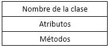
Definir una clase persona
La clase Persona contiene dos atributos (variables) para almacenar datos sobre una persona (nombre y edad) además de varios métodos (es mayor de edad, imprimir el nombre) que hacen cosas con dichos datos.
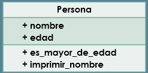
Elementos constituyentes de un clase
Los atributos y métodos de una clase se llaman miembros de una clase. Los atributos de una clase se llaman variables de instancia porque cada instancia de la clase (es decir, cada objeto de la clase), contiene sus propias variables atributo. Por lo tanto, los datos de cada objeto son individuales e independiente de los demás objetos, las variables que se comparten entre todos los objetos se llaman variables de clase.
5.1.1. Visibilidad
La visibilidad permite que los métodos y propiedades de una clase sean utilizados de forma correcta por otros elementos del programa. La visibilidad puede ser pública (el signo + se utiliza para representar la visibilidad en una definición de clase), privada (-) o protegida (#). En caso de visibilidad pública cualquier parte del programa tendrá acceso, tanto la propia definición de clase como partes externas a la misma. Si la visibilidad es privada, solo la clase tiene acceso a dichos datos u operaciones, ni partes externas ni otras clases podrán utilizarla. Por último, en caso que sea protegida, tanto la propia clase, como cualquiera que herede de ella podrán utilizar el método o propiedad, estando prohibido el uso a otras clases o partes externas.
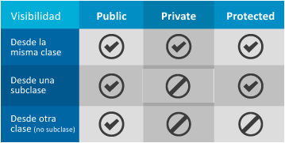
Python utiliza una programación muy fácil, limitando el número de estructuras y características posibles en el lenguaje, lo que hace que el inicio y las características de la POO también sean sencillas.
Python solo implementa una visibilidad pública, todos los métodos y atributos son públicos
5.1.2. Definición
La definición de una clase siempre comienza con la palabra clave class seguida del nombre de la clase y terminada con los dos puntos(:), en caso que se dé la herencia la sintaxis cambia un poco, pero se verá en el siguiente capítulo. Los métodos se definen con la palabra clave def seguido del nombre y los parámetros entre paréntesis. Hay que destacar que el primer parámetro de la definición será self en el que el sistema nos pasará una referencia al objeto actual (este mecanismo difiere mucho de otros lenguajes, que tienen una o varias variables internas predefinidas que apuntan a ese objeto: this, that, etc.). Para definir propiedades tenemos que inicializarlas en cualquier método, pero el procedimiento que vamos a seguir es usar el método “constructor o inicializador” (__init__) para tal fin. Como vemos en el siguiente ejemplo creamos dos propiedades (nombre y edad) y las inicializamos.
Ejemplo
Definir una clase muy simple, la clase Persona. Empezaremos definiendo la clase y a continuación un objeto de la misma, haremos uso del constructor (__init__) con dos subrayados delante y detrás, para inicializarla, y del método imprimir.
class Persona:
def __init__(self, nombre, edad):
self.nombre = nombre # definimos las propiedades
self.edad = edad
#definimos los métodos de la clase
def es_mayor_de_edad(self):
return self.edad >= 18
def imprimir(self):
return self.nombre
# creación y uso de objetos
p = Persona("Juan", 23)
print(p.imprimir())
print(f"{p.nombre} tiene {p.edad} años")
print(p)
q = Persona("Elena", 63)
print(f"{q.nombre} tiene {q.edad} años")
print(q)
Hay que tener en cuenta que la clase Persona nos servirá para crear tantos objetos Persona como necesitemos, cada uno con su nombre y edad. Los métodos nos permitirán manipular los datos de cada objeto. En este caso creamos dos objetos (p, q) y los inicializamos en el momento de la creación (Persona(…)). También hacemos uso de sus propiedades y métodos mediante la notación punto (p.nombre, p.metodo(), etc.)
Como todo Python, la indentación entre bloques es obligatoria
5.1.3. Nombrado de las clases
El nombrado de las clases, métodos y propiedades es muy importante en cualquier definición y deberemos usar las normas del lenguaje (PEP) o las del proyecto en concreto. Las normas básicas que seguiremos en nuestros proyectos son:
- Las clases se nombran en formato primera letra de palabra en mayúscula: Persona, AulasClase, etc. Usando nombres para la definición.
- Los métodos se nombran en minúsculas completamente, separando cada palabra con un subrayado, usando verbos como primera palabra: imprimir_nombre, grabar_datos, etc.
- Las propiedades o atributos se escriben como los métodos, usando solo nombres: numero_lineas, nombre_persona, etc.
- Se implementarán primero todos los métodos mágicos (comienzan por dos subrayados) y a continuación los nuestros.
- Se implementarán primero un método utilizado que el método que lo usa.
- Los métodos relacionados se implementarán cerca unos de otros.
5.1.4. Creación y utilización de atributos.
Los atributos o propiedades en las clases son los datos de la misma. Estos datos se pueden definir en cualquier método de la clase con solo inicializarlos, pero es mucho más claro utilizar el constructor para tal fin.
def __init__(self, nombre, edad):
self.nombre = nombre # definimos las propiedades
self.edad = edad
Todos los atributos o propiedades en Python son públicos con lo que no es necesario especificar la visibilidad del mismo. En algunos entornos de POO critican esta característica al “mermar” la POO de alguna manera. No es verdad, ya que todas las opciones en las que surgen los atributos privados o protegidos se pueden implementar de otra manera eficiente bajo Python.
Independientemente que todos los atributos son públicos, podemos indicar a otros programadores que no deben hacer uso de un atributo anteponiendo un subrayado (_) al nombre. Esto no impedirá nada, no se controlará nada, es simplemente una sugerencia al programador.
def __init__(self, nombre, edad):
self._nombre = nombre # definimos un atributo privado
print(p_nombre)
Si aun así tenemos la imperiosa necesidad de impedir el acceso a un atributo, se puede anteponer al nombre dos subrayados (__) de tal manera que “impedirá” de forma externa al objeto el acceso (Nota: en verdad no se impide, se accede a una característica de renombrado en la que internamente mantiene el nombre original y externamente tiene otro nombre, si conocemos las reglas de nombrado podremos acceder desde fuera también, pero allá cada uno con no seguir lo que se le sugiere).
Para acceder a un atributo, utilizaremos la notación punto (.), utilizaremos el objeto (o la clase si es un atributo de clase) seguido de un punto y del nombre del atributo. Al ser una variable, podrá estar en la parte izquierda de una asignación para darle un valor y en la parte derecha para acceder.
p.nombre = “María”
print(p_nombre)
cadena = f"{p.nombre} tiene {p.edad} años"
5.1.5. Ejercicios
Ejercicio Resuelto
En cada ejercicio debes crear un programa con dos clases: una clase que solo contendrá la función main, además de otra clase (con sus atributos y métodos) que utilizarás desde el main de la clase principal para hacer pruebas sobre su funcionamiento.
En este apartado las clases solo contendrán atributos (variables) y haremos algunas pruebas sencillas con ellas para entender cómo se instancia objetos y se accede a sus atributos.
Ejercicio A1 – Punto
Crea un programa con una clase llamada Punto que representará un punto de dos dimensiones en un plano. Solo contendrá dos atributos enteros llamadas x e y (coordenadas).
En el main de la clase principal instancia 3 objetos Punto con las coordenadas (5,0), (10,10) y (-3, 7). Muestra por pantalla sus coordenadas (utiliza un print para cada punto). Modifica todas las coordenadas (prueba distintos operadores como = + - += *=...) y vuelve a imprimirlas por pantalla.
Ejercicio A2 – Persona
Crea un programa con una clase llamada Persona que representará los datos principales de una persona: dni, nombre, apellidos y edad.
En el main de la clase principal instancia dos objetos de la clase Persona. Luego, pide por teclado los datos de ambas personas (guárdalos en los objetos). Por último, imprime dos mensajes por pantalla (uno por objeto) con un mensaje del estilo “Azucena Luján García con DNI … es / no es mayor de edad”.
Ejercicio A3 – Rectángulo
Crea un programa con una clase llamada Rectángulo que representará un rectángulo mediante dos coordenadas (x1, y1) y (x2, y2) en un plano, por lo que la clase deberá tener cuatro atributos enteros: x1, y1, x2, y2.
En el main de la clase principal instancia 2 objetos Rectángulo en (0,0)(5,5) y (7,9)(2,3). Muestra por pantalla sus coordenadas, perímetros (suma de lados) y áreas (ancho x alto). Modifica todas las coordenadas como consideres y vuelve a imprimir coordenadas, perímetros y áreas.
Ejercicio A4 – Artículo
Crea un programa con una clase llamada Articulo con los siguientes atributos: nombre, precio (sin IVA), iva (siempre será 21) y stock (representa cuantos quedan en el almacén).
En el main de la clase principal instancia un objeto de la clase artículo. Asígnales valores a todos sus atributos (los que quieras) y muestra por pantalla un mensaje del estilo “Pijama - Precio: 10€ - IVA: 21% - PVP: 12,1€” (el PVP es el precio de venta al público, es decir, el precio con IVA). Luego, cambia el precio y vuelve a imprimir el mensaje.
5.1.6. Creación y utilización de métodos.
Un método en POO, función o procedimiento en programación estructurada, es una sección de un programa que calcula un valor de manera independiente al resto del programa o realiza una acción sobre los datos, que tiene tres componentes importantes:
- Los parámetros, que son los valores que recibe como entrada.
- El código de la función, que son las operaciones que hace.
- El resultado (o valor de retorno), que es el valor final que entrega.
En esencia, una función o método (formalmente hablando, un método es una operación de la clase sobre los datos de la misma) es un mini programa y sus tres componentes son análogos a la entrada, el proceso y la salida de un programa.
Para Python la única diferencia entre métodos y funciones es que los métodos tienen obligatoriamente un parámetro como mínimo, el objeto sobre el que el método ha sido invocado (self). Hay que tener en cuenta que este mecanismo es automático y que no hace falta que nosotros pasemos ese primer argumento al llamar al método, solo los siguientes parámetros.
print(p.imprimir()) # no se pasa el self, es automático
Nota Importante
Todo lo explicado en este punto también se puede extrapolar a la creación de funciones.
Diferencia entre procedimientos y funciones
Formalmente una función y un procedimiento no es lo mismo. Una función es una sección de un programa que calcula un valor de manera independiente al resto del programa que tiene tres partes: parámetros de entrada, proceso o código y resultado. Por otro lado, un procedimiento solo tiene dos partes: entrada y proceso, no devuelve nada.
A nivel de código la diferencia principal es que en los procedimientos no encontraremos una sentencia return, mientras que en las funciones sí.
Bajo Python, no existen los procedimientos, incluso si omitimos la sentencia return en nuestra definición, el intérprete devolverá de forma predefinida None como valor de nuestra función.
Para Python como para el resto de lenguajes, una función es un bloque de código con autonomía propia de ejecución que podremos reutilizar. La mayor diferencia con los lenguajes tradicionales es que es un objeto con sus propiedades y métodos. Una función se puede definir en cualquier parte del código, aunque es recomendable estructurar el código en módulos.
Definición
def fib(n): # write Fibonacci series up to n
"""Print a Fibonacci series up to n."""
a, b = 0, 1
while a < n:
print(a, end=' ')
a, b = b, a+b
print()
return False
La palabra reservada def se usa para definir funciones o métodos. Debe seguirle el nombre del método o función y la lista de parámetros formales entre paréntesis (si es un método debe incluir obligatoriamente self como primer parámtro). Las sentencias que forman el cuerpo de la función empiezan en la línea siguiente y deben tener sangría. La sentencia return final es optativa y representa el valor devuelto por el método cuando es utilizada como parte derecha de una asignación.
Esta definición se encontrará dentro de una definición de clase si es un método o fuera de ella si es una función, el resto del apartado trataremos como si se encontrase dentro de una clase, pero omitiremos el primer parámetro.
La primera sentencia del cuerpo de la función puede ser opcionalmente una cadena de texto literal; esta es la cadena de texto de documentación de la función, o docstrings para documentación.
Ámbito de las variables
El ámbito es la zona de código que tiene acceso una variable. Python, como todos los lenguajes, tiene varios ámbitos para definir las variables uno local, uno nonlocal y otro global. Por defecto estos ámbitos no se mezclan. El ámbito local se corresponde con el nivel de función, el ámbito global con el de programa, el nonlocal con una función interna.
Para modificar una variable definida en el programa (ámbito global) demntrto de una función deberemos anteponer la palabra clave global y el nombre de la variable, para poder leerla no hace falta.
Nunca podremos cambiar una variable local fuera de la función que la defina.
mi_var_global = 3
def mi_fun():
global mi_var_global # Quitar global y ver qué pasa
mi_var_global = 3
print(mi_var_global)
> 3
Para las clases, el ámbito clase y local se mantiene, de tal manera que cualquier variable definida dentro de un método será local a toda la clase, por lo que se podrá hacer uso de ella a través del objeto self.
En una clase no se debería acceder nunca a una variable global.
Del mismo modo, si dentro de una función interna a otra, queremos acceder al bloque de la función padre deberemos usar la palabra clave nonlocal, que nos da acceso al bloque inmediatamente superior, como en el ejemplo siguiente.
g = 5
def miFunc2():
global g
g = 6
b = 6
def miInterna():
nonlocal b # accedemos a la b externa
global g
b = 7
g = 8
miInterna()
print(b, g)
miFunc2() # 7,8
print(g) # 8
Parámetros
Un parámetro es un valor que se le pasa al método o función, un valor que espera para realizar su trabajo. Como Python define el tipo de una variable (parámetro en este caso) en tiempo de ejecución, no es necesario determinarlo en el parámetro, y no solo eso, el mismo parámetro aceptará cualquier tipo de datos para su ejecución, por lo que tendremos que realizar una conversión explícita si fuera necesario.
def suma(numero_1, numero_2):
print(numero_1 + numero_2)
suma(2,3)
suma(2) # Error faltan parámetros
Parámetros pasados por Valor - por Referencia
Dependiendo del tipo de dato que enviemos a la función o método, podemos diferenciar dos comportamientos:
- Paso por valor: Se crea una copia local de la variable dentro de la función, los cambios internos no se reflejan en la variable externa.
- Paso por referencia: Se maneja directamente la variable, los cambios realizados dentro de la función le afectarán también fuera. Se pasa la dirección del objeto.
Tradicionalmente
- Los tipos simples se pasan por valor: Enteros, flotantes, cadenas, lógicos...
- Los tipos compuestos se pasan por referencia: Listas, diccionarios, conjuntos, tuplas, ...
def mi_funcion(numero_1, obj):
numero_1 = 1
obj.nombre = "Nombre"
print(id(numero_1))
print(obj)
valor = 2
p = Persona("Juan", 23)
print(valor, p.nombre)
print(p)
print(id(valor))
mi_funcion(valor, p)
print(valor, p.nombre)
# 2 Juan
# <__main__.Persona object at 0x000002736CE34F70>
# 2694761769296
# 2694761769264
# <__main__.Persona object at 0x000002736CE34F70>
# 2 Nombre
Se puede comprobar como el objeto Persona es el mismo dentro y fuera de la función, se pasa la referencia de memoria, pero el parámetro número se crea una nueva copia, el identificador es diferente.

Se debe proporcionar todos los parámetros obligatorios a la hora de llamar a la función. Un parámetro es obligatorio si en la definición no se le ha proporcionado un valor por defecto.
Parámetros de Entrada – Salida
El comportamiento común de un parámetro es como entrada, esto quiere decir que recibirá un dato almacenado en el parámetro enviado desde el contexto en el que se llama a la función, se utilizará dentro de la función y no se modificará.
Los parámetros de salida permiten modificar el valor de una variable externa a la función relacionada con el parámetro. De esta manera, si la función modifica el valor del parámetro, la variable externa relacionada a este parámetro se modificará también, inclusive después de que la función haya terminado de ejecutarse.
En Python todos los parámetros son de entrada, pero no confundir con que se pasen por referencia.
Parámetros por defecto
Al igual que en muchos lenguajes se pueden usar parámetros por defecto, deben ir a continuación de los parámetros tradicionales. Estos parámetros si no se pasan en la llamada tendrán el valor establecido en la definición.
def miFuncion(a, b = 0):
print(a , b)
miFuncion(2) # 2 0
Los parámetros por defecto se evalúan solo una vez, cuando se define la función, por lo que el siguiente código el valor por defecto para arg es 5 y no 6.
i = 5
def f(arg=i):
print(arg)
i = 6
f() #5, ya que se ha evaluado la i al definir la función
f(arg=7)#7
Paso de parámetros por palabras clave
Python no es un lenguaje tan rígido como otros, con lo que permite algunas licencias en el uso de los métodos o funciones. En Python los parámetros se pueden enviar a una función Python o bien por posición o explícitamente por nombre. Por posición lo hemos visto en los puntos anteriores, por nombre el orden no importa y se antepone al valor el nombre del parámetro.
def suma(numero_1, numero_2):
print(numero_1 + numero_2)
suma(numero_2=2, numero_1=3)
Aunque la versatilidad de Python permite definir si es necesario la rigidez de otros lenguajes, indicando explícitamente qué parámetros son posicionales, cuáles se deberán pasar por clave y cuáles podrán utilizarse de forma indistinta.
def combined_example(pos_only, /, standard, *, kwd_only):
print(pos_only, standard, kwd_only)
combined_example(1, 2, kwd_only=3) # 1 2 3
combined_example(1, standard=2, kwd_only=3) # 1 2 3
Número indeterminado de parámetros
Cuando no sabemos el número de parámetros a recibir podemos usar el operador asterisco para juntarlos todos en una tupla como vemos en el ejemplo siguiente. Se puede mezclar este tipo de parámetros con cualquiera siempre que se sitúe después de los parámetros por defecto y antes de los parámetros del siguiente punto.
def miFuncion(a, b = 0, *resto):
print(a , b, resto)
print(type(resto))
miFuncion(2, 5, "resto", 5)
> 2 5 ('resto', 5)
> <class 'tuple'>
> <class 'tuple'>
Desempaquetado de parámetros
En este caso, similar al anterior, se recogen en un diccionario todos los parámetros no definidos, pero es obligatorio pasarlos por nombre, que serán las claves del diccionario. Si usamos este tipo de parámetros debe situarse obligatoriamente al final de la definición, después de los parámetros indeterminados.
def miFuncion(a, b = 0, **resto):
print(a , b)
print(resto)
miFuncion(2, 5, c = "resto", d = 5)
# 2 5
# {'c': 'resto', 'd': 5}
Sugerencias de tipos en los parámetros
El lenguaje permite sugerencias de tipo (definir el tipo del parámetro) para los parámetros, pero no se utilizan para forzar ninguna conversión ni generan errores en caso que el tipo no concuerde, tal y como se ve en el segundo ejemplo.
miFuncion(a:int, b:str)->int:
return str(a)+str(b) # no se fuerza a int
print(miFuncion("3",5)) #espera int, str
# 35, se pasa: str, int, al revés
Devolución de valores
Hemos dicho que los métodos o funciones tienen tres partes y el resultado es la última de ellas. Ya hemos comentado que Python solo implementa funciones con lo que, si no proporcionamos un valor de vuelta, este será None.
Para devolver un valor utilizaremos la palabra clave return y a continuación el valor a devolver. No es un buen hábito de programación que existan en el método varios returns, siendo generalmente esta instrucción siempre la última de la función.
def suma(numero_1, numero_2):
return int(numero_1) + int(numero_2)
print(suma(2, 3)) # 5
print(suma(“2”,3)) # 5
Python no puede devolver valores múltiples, siempre devolverá un único valor. Pero nada impide devolver un objeto que contenga otros valores, como por ejemplo tuplas, diccionarios y otros objetos. Estos tipos de datos se verán en la siguiente unidad de trabajo.
def suma(numero_1, numero_2):
return (numero_1, numero_2) # devuelve 1 tupla no dos valores
print(suma(2, 3)) # (2,3)
print(suma(“2”,3)) # (‘2’, 3)
Funciones lambda o anónimas
Las funciones lambda son funciones sin nombre que se suelen usar en aquellos parámetros que esperan una función para realizar su trabajo, como puede ser la ordenación.
def hacer_incrementador(n): #lambda
return lambda x: x + n #devolvemos una función
f = hacer_incrementador(42)
#f es una función hacer_incrementador inicializada a 42
print (f(1)) #43
for x in filter(lambda i: i % 2 == 0, [1, 2, 3, 4]):
print(x)
Paso de métodos a funciones
class Persona:
def es_mayor_De_edad(self):
return self.edad >= 18
def imprimir(self):
return self.nombre
# eliminar la línea class, disminuir el sangrado, eliminar self,
# convertir variables de clase en parámetros
def es_mayor_De_edad(edad):
return edad >= 18
def imprimir(nombre):
return nombre
Creación y utilización de constructores y destructores
Un constructor es un método que se llama en el momento de la creación del objeto para inicialización del mismo. Un destructor se llama como última ejecución del objeto cuando es eliminado. Las llamadas a estos métodos son automáticas y no tenemos que hacer nada. Generalmente, los constructores se utilizan para inicialización del objeto y establecimiento de conexiones; los destructores para eliminación de basura y cierre de conexiones.
Python tiene dos métodos en vez de uno para la “construcción” del objeto: el constructor y el inicializador. Raramente vamos a usar constructor a no ser que ahondemos en Metaclases por lo que usaremos exclusivamente el método inicializador: __init__. A efectos funcionales de nuestro nivel no hay diferencia.
En cuanto al destructor, utilizaremos el método __del__ que técnicamente no es un destructor, es llamado por el sistema cuando se recupera la memoria (el recolector de memoria) del objeto al destruirlo. El mayor problema que presenta este método es que el sistema no asegura que se llame al destructor, puede que el script termine antes de que pueda ser llamado y no hacer una liberación ordenada de los recursos.
class Persona:
def __init__(self):
print("Inicializando")
def __del__(self):
print("destruyendo")
p = Persona("Juan", 23)
p = None
Propiedades
Una de las críticas que se hace a Python desde los puristas de la POO es la no existencia de visibilidad en los métodos y atributos, pero cuando ahondamos en los usos de estas características vemos que no es imprescindible la visibilidad para una adecuada programación. El caso que se utiliza para minorar las capacidades de POO de Python hace referencia a aquellos en los que queremos controlar el acceso a un atributo, verificarlo antes de cambiarlo o realizar algún cálculo con él antes de la asignación, en definitiva, si necesitamos ejecutar código antes de la modificación del atributo (en otros lenguajes se implementa a través de los métodos getters y setters también presentes en Python).
Para solucionar este problema Python ofrece la creación de propiedades. Para Python una propiedad es un atributo que puede ejecutar código en el momento del acceso, que se define dentro de una clase mediante un decorador (los decoradores se verán más adelante) o al crear un objeto property en la definición.
# Using property object
class Celsius:
def __init__(self, temperature=0):
self.temperature = temperature
def to_fahrenheit(self):
return (self.temperature * 1.8) + 32
# getter
def get_temperature(self):
print("Getting value...")
return self._temperature
# setter
def set_temperature(self, value):
print("Setting value...")
self._temperature = value
# creating a property object
temperature = property(get_temperature, set_temperature)
# Using @property decorator
class Celsius:
def __init__(self, temperature=0):
self.temperature = temperature
def to_fahrenheit(self):
return (self.temperature * 1.8) + 32
@property
def temperature(self):
print("Getting value...")
return self._temperature
@temperature.setter
def temperature(self, value):
print("Setting value...")
self._temperature = value
human = Celsius(37)
print(human.temperature)
print(human.to_fahrenheit())
Ambas definiciones son similares y podremos usar cualquiera de las dos, pero no mezclarlas en una misma propiedad.
Con esta sintaxis, podemos hacer propiedades de solo lectura (con solo la parte get) o propiedades de lectura escritura con ambas partes. En cualquier caso, una propiedad definida con este mecanismo no es diferente a la creada en un constructor (Este mecanismo es conocido en muchos lenguajes POO como métodos getters and setters).
Ejemplos
Ejercicio Resuelto
Definir la siguiente estructura de clases.
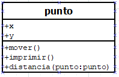
Definir la siguiente estructura de clases.
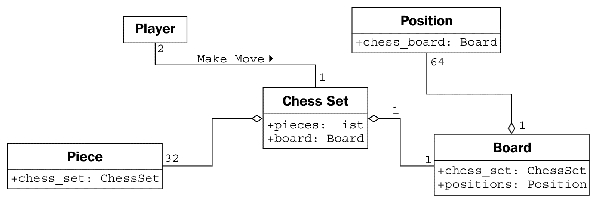
5.1.7. Ejercicio
Ejercicio Resuelto
En este apartado tienes que modificar los programas del apartado anterior (o haz una copia del proyecto si lo prefieres) y realizar los cambios indicados.
Ejercicio B1 – Punto
Añade a la clase Punto los siguientes métodos públicos:
- imprime() // Imprime por pantalla las coordenadas. Ejemplo: “(7, -5)”
- set_xy(x, y) // Modifica ambas coordenadas. Es como un setter doble.
- desplaza(int dx, int dy) // Desplaza el punto la cantidad (dx, dy) indicada. Ejemplo: Si el punto (1, 1) se desplaza (2, 5) entonces estará en (3, 6).
- distancia(Punto p) // Calcula y devuelve la distancia entre el propio objeto y otro objeto (Punto p) que se pasa como parámetro: distancia entre dos coordenadas.
Prueba a utilizar estos métodos desde el main para comprobar su funcionamiento.
Ejercicio B2 – Persona
Añade a la clase Persona los siguientes métodos públicos:
- imprime() // Imprime la información del objeto: “DNI:… Nombre:… etc.”
- es_mayor_edad() // Devuelve true si es mayor de edad (false si no).
- es_jubilado() // Devuelve true si tiene 65 años o más (false si no).
- diferencia_edad(Persona p) // Devuelve la diferencia de edad entre ‘this’ y p.
Prueba a utilizar estos métodos desde el main para comprobar su funcionamiento.
Ejercicio B3 – Rectángulo
En nuestro software necesitamos asegurarnos de que la coordenada (x1, y1) represente la esquina inferior izquierda y la (x2, y2) la superior derecha del rectángulo, como en el dibujo.
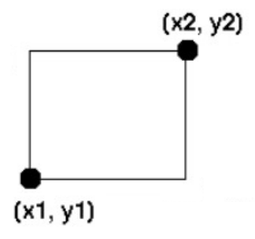
Incluye un if que compruebe los valores. Si son válidos guardará los parámetros en el objeto. Si no lo los inicializará a al valor de la coordenada inferior.
Añade a la clase Rectángulo métodos públicos con las siguientes funcionalidades:
- Método para imprimir la información del rectángulo por pantalla.
- Métodos setters dobles y cuadruples: set_x1y1, set_x2y2 y set_all(…).
- Métodos get_perimetro y get_area que calculen y devuelvan el perímetro y área del objeto.
Prueba a utilizar estos métodos desde el main para comprobar su funcionamiento.
Ejercicio B4 – Artículo
Añade a la clase Artículo métodos públicos con las siguientes funcionalidades:
- Método para imprimir la información del artículo por pantalla.
- Método get_pvp que devuelva el precio de venta al público (PVP) con iva incluido.
- Método get_pvp_descuento que devuelva el PVP con un descuento pasado como argumento.
- Método vender que actualiza los atributos del objeto tras vender una cantidad ‘x’ (si es posible). Devolverá true si ha sido posible (false en caso contrario).
- Método almacenar que actualiza los atributos del objeto tras almacenar una cantidad ‘x’. Devolverá true.
5.2. Objetos
Desde un punto de vista técnico, un objeto es una instancia de una clase. Cuando creamos una instancia estamos reservando una zona de memoria dedicada para el objeto en cuestión y esa zona va a permanecer ahí mientras la variable en cuestión (u otra) la referencie. Tras leer lo anterior podemos pensar en un objeto como un puntero a la zona de memoria que ocupa, pero en POO no suele hablarse siguiendo esa terminología. A diferencia de otros lenguajes de programación, no es necesario liberar las zonas de memoria cuando dejan de utilizarse. Existe un mecanismo llamado recolector de basura que se encarga de ir liberando las zonas de memoria que no están siendo referenciadas por ningún objeto.
Un objeto contiene toda la información que permite definirlo e identificarlo frente a otros objetos pertenecientes a otras clases e incluso frente a objetos de una misma clase, al poder tener valores bien diferenciados en sus atributos.
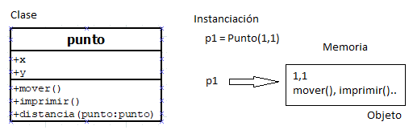
5.2.1. Creación y uso de objetos
Un objeto no se define, se crea o instancia en una variable a partir de un modelo (clase) de la que recoge todas sus características. Una vez instanciado se puede hacer uso de los atributos y métodos de la clase que hemos utilizado de base.
Si vemos el ejemplo anterior, el objeto p1 se instancia de la clase punto y en nuestro código a través de la notación punto podremos hacer uso de los atributos x e y así como de los métodos.
human = Celsius(37) # constructor
print(human.temperature)
print(human.to_fahrenheit())
Cuando creamos un objeto, hacemos uso de su “constructor” de forma automática, este constructor se usa para inicializar el objeto con los datos iniciales. Si no proporcionamos todos los datos que son obligatorios no será posible instanciar el objeto.
Una vez instanciado el objeto deberemos hacer uso del mismo. En Python el acceso a propiedades o métodos se hace a través del operador punto (.).
human.temperature = 39
print(human.temperature)
print(human.to_fahrenheit())
5.2.2. Visibilidad
La visibilidad permite que los métodos y propiedades de una clase sean utilizados de forma correcta por otros elementos del programa.
En la imagen podemos ver las clases de visibilidad que se pueden implementar bajo un lenguaje POO tradicional: pública, privada y protegida.
En Python la visibilidad es mucho más sencilla y solo implementa visibilidad pública, todos los métodos y propiedades son accesibles desde fuera del objeto. Aunque solo se impelente la visibilidad pública, podemos indicar a otros programadores que no deben hacer uso de un atributo o método anteponiendo un subrayado (_) al nombre. Esto no impedirá nada, no se controlará nada, es simplemente una sugerencia al programador.
class Celsius:
def __init__(self, temperature=0):
self._temperature = temperature # privada
def _to_fahrenheit(self): # protegido
print("en el método", self.__get_temperature())
return (self._temperature * 1.8) + 32
def __get_temperature(self): # privado
print("Getting value...")
return self._temperature
human = Celsius(37)
print(human._temperature)
print(human._to_fahrenheit())
print(dir(human))
print(human._Celsius__get_temperature()) # cambio de nombre
Si aun así tenemos la imperiosa necesidad de impedir el acceso a un atributo o método, se puede anteponer al nombre dos subrayados (__) de tal manera que “impedirá” de forma externa al objeto el acceso (Nota: En verdad no se impide, se accede a una característica de renombrado o name mangling en la que internamente mantiene el nombre original y externamente tiene otro nombre (_NombreClase_nombre_metodo), si conocemos las reglas de nombrado podremos acceder desde fuera también, pero allá cada uno con no seguir lo que se le sugiere. Internamente mantiene el nombre original para las llamadas).
No se recomienda el uso de dobles subrayados, en su lugar si queremos decir que una variable es privada usaremos la nomenclatura de un subrayado.
5.2.3. Ejercicio
Ejercicio Resuelto
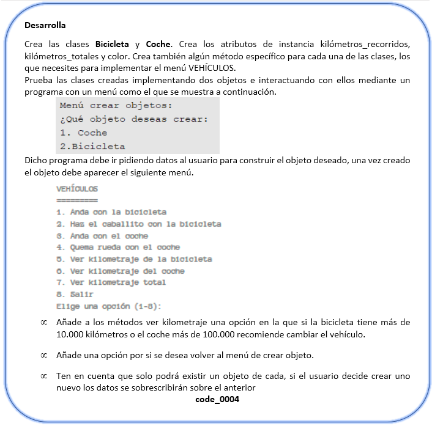
5.3. Paquetes
5.3.1. Módulos
Un módulo es un fichero Python que contiene código. Potencialmente cualquier fichero puede ser un módulo, o ser llamado para la ejecución. Como tal podemos determinar si un fichero ha sido llamado como módulo o para la ejecución a través de la variable global __name__. Esta variable contendrá el valor: __main__ cuando se esté intentando ejecutar el código, en caso contrario el módulo se intentará usar como librería de importación.
Las variables que se definan en un módulo en el ámbito global serán accesibles desde el módulo y desde fuera como una función más.
def main():
print("Ejecutando el código")
if __name__ == "__main__":
main()
else:
print("importando datos")
5.3.2. Paquete
Un paquete (namespace) es un directorio en el que se le crea un directorio especial: __init__.py (optativo a partir de la versión 3.3). Este fichero puede estar vacío o puede tener una variable __all__, con lista de los módulos al cargar cuando se use. Además, cualquier variable o definición que se haga en este fichero, estará disponible para todos los módulos del paquete usando el nombre del mismo para importarlo (namespace).
pqt_1\
__init__.py
from .database import db
modulo_1.py
from pqt_1 import db
5.3.3. Ejemplo
En este ejemplo desarrollaremos una librería muy básica. En primer lugar, se crea un módulo librería (lib001b.py) y a continuación el paquete lib001a con dos módulos dentro. El fichero 0002.py hace uso de las librerías y todos sus ejemplos de importación.
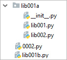
lib001b.py
def suma(*valores):
rest=0
for val in valores:
rest+=int(val)
return rest
lib001.py
varg=3
def suma(*valores):
rest=0
for val in valores:
rest+=val
print (varg)
return rest
lib002.py
varg=5
def suma(*valores):
rest=0
for val in valores:
rest+=val
print (varg)
return rest
0002.py
import lib001b # se importa todo el módulo
import lib001a.lib001 # se importa un módulo de un pqt.
import lib001a.lib002 as lb # se renombra un módulo
print(lib001b.suma(1, 3, 5, 7)) #16
print(lib001a.lib001.suma(1,2,3,4)) #3 10
print(lb.suma(1,2,3,4)) #5 10
lb.varg = 99 #acceso a la variable de módulo
print(lb.suma(1,2,3,4)) #99 10
from lib001b import suma
print(suma(1,2,3,4)) #10
5.3.4. Uso de import
El contenido de cada módulo, podrá ser utilizado a la vez, por otros módulos, pero para ello, es necesario importar los módulos que se quieran utilizar. Para importar un módulo, se utiliza la instrucción import, seguida del nombre del paquete (si aplica) más el nombre del módulo (sin extensión) que se desee importar.
Todo código en un paquete importado será ejecutado en el momento de la importación, pero no se ejecutarán las clases o funciones definidas en él, hay que llamarlas de forma explícita.
import modulo # un módulo que no pertenece a un paquete
import paquete.modulo1 # un módulo que está dentro de un paquete
import paquete.subpaquete.modulo1
print modulo.CONSTANTE_1
print paquete.modulo1.CONSTANTE_1
print paquete.subpaquete.modulo1.CONSTANTE_1
Es posible también, importar mediante un alias. Para ello, durante la importación, se asigna la palabra clave as seguida del alias con el cual nos referiremos en el futuro:
import modulo as m
import paquete.modulo1 as pm
import paquete.subpaquete.modulo1 as psm
print m.CONSTANTE _1
print pm.CONSTANTE _1
print psm.CONSTANTE_1
En Python, es posible también, importar de un módulo solo los elementos que se desee utilizar. Para ello se utiliza la instrucción from seguida del namespace, más la instrucción import seguida del elemento que se desee importar. En este caso, se accederá directamente al elemento, sin recurrir a su namespace.
from paquete.modulo1 import CONSTANTE_1
print CONSTANTE_1
Es posible también, importar más de un elemento en la misma instrucción. Para ello, cada elemento irá separado por una coma (,) y un espacio en blanco.
from paquete.modulo1 import CONSTANTE_1, CONSTANTE_2
Pero ¿qué sucede si los elementos importados desde módulos diferentes tienen los mismos nombres? En estos casos, habrá que prevenir fallos, utilizando alias para los elementos:
from paquete.modulo1 import CONSTANTE_1 as C1, CONSTANTE_2 as C2
from paquete.subpaquete.modulo1 import CONSTANTE_1 as CS1,
from .paquete.subpaquete.modulo1 import CONSTANTE_2 as CS2
print C1
print C2
print CS1
print CS2
Se puede anteponer un punto(.) o dos puntos (..) indicando que la búsqueda del paquete debe empezar en el directorio del fichero en vez del proyecto.
5.4. Destrucción de objetos y Liberación de memoria
El recolector de basura o garbage collector es una de las piezas fundamentales del lenguaje, es la funcionalidad que libera al programador de la solicitud y liberación de memoria de forma explícita lo que facilita a los programadores la creación de programas, una mayor productividad, evita errores y fallos de seguridad. Uno de los motivos por los que programar en Python es cómodo y sencillo es que no tenemos que preocuparnos por el tiempo de vida de nuestros objetos ya que implementa el garbage collector. Es decir, una vez que deja de ser necesaria, una variable desaparece de la memoria “mágicamente”.
Python utiliza para manejar la memoria una estrategia combinada consistente en: conteo de referencias y colector de basura generacional.
5.4.1 La gestión del recolector de basuras
El módulo gc proporciona una interfaz para el recolector de basura opcional (recolector de basura cíclico generacional). Proporciona la capacidad de deshabilitar el recolector, ajustar la frecuencia de recolección y establecer opciones de depuración.
También proporciona acceso a objetos inaccesibles (unreachable) que el recolector encontró, pero no pudo liberar. Dado que el recolector de basura complementa el conteo de referencias es posible desactivarlo siempre que se esté seguro de que el programa no crea referencias cíclicas.
El módulo gc proporciona las siguientes funciones:
- µ gc.enable(). Habilita la recolección automática de basura.
- µ gc.disable(). Deshabilita la recolección automática de basura.
- µ gc.isenabled(). Retorna True si la recolección automática está habilitada.
- µ gc.collect(generation=2). Sin argumentos, ejecuta una recolección completa. El argumento opcional generation debe ser un número entero que especifica qué generación recolectar (de 0 a 2. Se retorna el número de objetos inaccesibles encontrados.
Las listas libres mantenidas para varios tipos incorporados son borradas cada vez que se ejecuta una recolección completa o una recolección de la generación más alta. No obstante, no todos los elementos de algunas listas libres pueden ser liberados, particularmente float, debido a su implementación particular.
5.5. Librería estándar
5.5.1 Cadenas, clase str
Conocimiento previo
Parra un uso básico de la clase str o cadenas de caracteres revisar la U.T. 3.
El tipo str es una secuencia inmutable de caracteres Unicode (cuidado cuando trabajes con texto procedente de ficheros u otras fuentes de datos. Fíjate en qué codificación está y haz las transformaciones necesarias si no quieres tener problemas. Por defecto, la codificación de un string en Python es Unicode, concretamente UTF-8).
Una singularidad de la clase str es que a su constructor se le puede pasar cualquier objeto. Al hacer esto, la función str() devuelve la representación en forma de cadena de caracteres del propio objeto (si se pasa un string devuelve el string en sí). Normalmente, al llamar a la función str(objeto) lo que se hace internamente es llamar al método __str__() del objeto. Si este método no existe, entonces devuelve el resultado de invocar a repr(objeto) o __repr__().
Cadenas de caracteres.
Todas las cadenas de caracteres implementan las operaciones comunes de las secuencias, junto con los métodos descritos a continuación.
- str.capitalize(). Retorna una copia de la cadena con el primer carácter en mayúsculas y el resto en minúsculas. Distinto en la versión 3.8: El primer carácter se pasa ahora a título, más que a mayúsculas. Esto significa que caracteres como dígrafos solo tendrán la primera letra en mayúsculas, en vez de todo el carácter.
- str.center(width[, fillchar]). Retorna el texto de la cadena, centrado en una cadena de longitud width. El relleno a izquierda y derecha se realiza usando el carácter definido por el parámetro fillchar (Por defecto se usa el carácter espacio ASCII). Si la cadena original tiene una longitud len(s) igual o superior a width, se retorna el texto sin modificar.
- str.count(sub[, start[, end]]). Retorna el número de ocurrencias no solapadas de la cadena sub en el rango [start, end]. Los parámetros opcionales start y end Se interpretan como en una expresión de rebanada.
- str.encode(encoding="utf-8", errors="strict"). Retorna una versión codificada en forma de bytes. La codificación por defecto es 'utf-8'. El parámetro errors permite especificar diferentes esquemas de gestión de errores. El valor por defecto de errors es 'strict', que significa que cualquier error en la codificación eleva una excepción de tipo UnicodeError. Otros valores posibles son 'ignore', 'replace', 'xmlcharrefreplace', 'backslashreplace' y cualquier otro nombre que se haya registrado mediante la función codecs.register_error().
- str.endswith(suffix[, start[, end]]). Retorna True si la cadena termina con el sufijo especificado con el parámetro prefix, y False en caso contrario. También podemos usar suffix para pasar una tupla de sufijos a buscar. Si especificamos el parámetro opcional start, la comprobación empieza en esa posición. Con el parámetro opcional stop, la comprobación termina en esa posición.
- str.find(sub[, start[, end]]). Retorna el menor índice de la cadena s donde se puede encontrar la cadena sub, considerando solo el intervalo s[start:end]. Los parámetros opcionales start y end se interpretan como si fueran “índices” de una slice. retorna -1 si no se encuentra la cadena. El método find() se debe usar solo si se necesita saber la posición de la cadena sub. Si solo se necesita comprobar si sub es una parte de s, es mejor usar el operador in:
'Py' in 'Python'
True
- str.isalnum(). Retorna True si todos los caracteres de la cadena son alfanuméricos y hay, al menos, un carácter.
- str.isalpha(). Retorna True si todos los caracteres de la cadena son alfabéticos y hay, al menos, un carácter.
- str.isascii(). Retorna True si la cadena de caracteres está vacía, o si todos los caracteres de la cadena son ASCII.
- str.isdecimal(). Retorna True si todos los caracteres de la cadena son caracteres decimales y hay, al menos, un carácter.
- str.isdigit(). Retorna True si todos los caracteres de la cadena son dígitos y hay, al menos, un carácter.
- str.isidentifier(). Retorna True si la cadena de caracteres es un identificar válido de acuerdo a la especificación del lenguaje.
- str.islower(). Retorna True si todos los caracteres de la cadena están en minúsculas y hay, al menos, un carácter de ese tipo.
- str.isnumeric(). Retorna True si todos los caracteres de la cadena son caracteres numéricos y hay, al menos, un carácter.
- str.isprintable(). Retorna True si todos los caracteres de la cadena son imprimibles o si la cadena está vacía.
- str.isspace(). Retorna True si todos los caracteres de la cadena son espacios en blanco y hay, al menos, un carácter. Un carácter se considera espacio en blanco si, en la base de datos de Unicode, está clasificado en la categoría general ("Espacio, separador") o la clase bidireccional es WS, B, or S.
- str.istitle(). Retorna True si las palabras en la cadena tienen forma de título y hay, al menos, un carácter.
- str.isupper(). Retorna True si todos los caracteres de la cadena están en mayúsculas y hay, al menos, un carácter de ese tipo
- str.join(iterable). Retorna una cadena de caracteres formada por la concatenación de las cadenas en el iterable. Se eleva una excepción de tipo TypeError si alguno de los elementos en el iterable no es una cadena, incluyendo objetos de tipo bytes. Se usa como separador entre los elementos la cadena de caracteres pasada como parámetro.
- str.lower(). Retorna una copia de la cadena de caracteres con todas las letras en minúsculas.
- str.replace(old, new[, count]). Retorna una copia de la cadena con todas las ocurrencias de la cadena old sustituidas por new. Si se utiliza el parámetro count, solo se cambian las primeras count ocurrencias.
- str.split(sep=None, maxsplit=-1). Retorna una lista con las palabras que componen la cadena de caracteres original, usando como separador el valor de sep. Si se utiliza el parámetro maxsplit, se realizan como máximo maxsplit divisiones, (Por tanto, la lista resultante tendrá maxsplit+1 elementos). Si no se especifica maxsplit o se pasa con valor -1, entonces no hay límite al número de divisiones a realizar (Se harán todas las que se puedan).
- str.startswith(prefix[, start[, end]]). Retorna True si la cadena empieza por prefix, en caso contrario Retorna False. El valor de prefix puede ser también una tupla de prefijos por los que buscar. Con el parámetro opcional start, la comprobación empieza en esa posición de la cadena.
- str.strip([chars]). Retorna una copia de la cadena con los caracteres indicados eliminados, tanto si están al principio como al final de la cadena. El parámetro opcional chars es una cadena que especifica el conjunto de caracteres a eliminar. Si se omite o se usa None, se eliminan los caracteres de espacio en blanco. No debe entenderse el valor de chars como un prefijo, sino que se elimina cualquier combinación de sus caracteres.
- str.upper(). Retorna una copia de la cadena, con todos los caracteres con formas mayúsculas o minúsculas pasados a minúsculas.
Ejercicios
Ejercicio Resuelto
- Escribir por pantalla cada carácter de una cadena introducida por teclado.
- Realizar un programa que comprueba si una cadena leída por teclado comienza por una subcadena pedida por teclado.
- Pide una cadena y un carácter por teclado (valida que sea un carácter) y muestra cuantas veces aparece el carácter en la cadena.
- Suponiendo que hemos introducido una cadena por teclado que representa una frase (palabras separadas por espacios), realiza un programa que cuente cuantas palabras tiene.
- Si tenemos una cadena con un nombre y apellidos, realizar un programa que muestre las iniciales en mayúsculas.
- Realizar un programa que, dada una cadena de caracteres por caracteres, genere otra cadena resultado de invertir la primera.
- Pide una cadena y dos caracteres por teclado (valida que sea un carácter), sustituye la aparición del primer carácter en la cadena por el segundo carácter.
- Realizar un programa que lea una cadena por teclado y convierta las mayúsculas a minúsculas y viceversa.
- Realizar un programa que compruebe si una cadena contiene una subcadena. Las dos cadenas se introducen por teclado.
- Escribir funciones que dada una cadena de caracteres:
- Imprima los dos primeros caracteres.
- Imprima los tres últimos caracteres.
- Imprima dicha cadena cada dos caracteres. Ej.: recta debería imprimir rca
- Dicha cadena en sentido inverso. Ej.: hola mundo! debe imprimir !odnum aloh
- Imprima la cadena en un sentido y en sentido inverso. Ej.: reflejo imprime reflejoojelfer
- Escribir funciones que dada una cadena y un carácter:
- Inserte el carácter entre cada letra de la cadena. Ej.: separar , debería devolver s,e,p,a,r,a,r
- Reemplace todos los espacios por el carácter. Ej.: mi archivo de texto.txt y \_ debería devolver mi\_archivo\_de\_texto.txt
- Reemplace todos los dígitos en la cadena por el carácter. Ej.: su clave es: 1540 y X debería devolver su clave es: XXXX
- Inserte el carácter cada 3 dígitos en la cadena. Ej. 2552552550 y . debería devolver 255.255.255.0
- Escribir una función que reciba una cadena que contiene un largo número entero y devuelva una cadena con el número y las separaciones de miles. Por ejemplo, si recibe 1234567890, debe devolver 1.234.567.890.
- Escribir una función que, dada una cadena de caracteres, devuelva:
- La primera letra de cada palabra. Por ejemplo, si recibe Universal Serial Bus debe devolver USB.
- Dicha cadena con la primera letra de cada palabra en mayúsculas. Por ejemplo, si recibe república argentina debe devolver República Argentina.
- Las palabras que comiencen con la letra A. Por ejemplo, si recibe Antes de ayer debe devolver Antes ayer.
- Escribir funciones que dada una cadena de caracteres:
- Devuelva solamente las letras consonantes. Por ejemplo, si recibe algoritmos o logaritmos debe devolver lgrtms.
- Devuelva solamente las letras vocales. Por ejemplo, si recibe: sin consonantes debe devolver i ooae.
- Reemplace cada vocal por su siguiente vocal. Por ejemplo, si recibe vestuario debe devolver vistaerou.
- Indique si se trata de un palíndromo. Por ejemplo, anita lava la tina es un palíndromo (se lee igual de izquierda a derecha que de derecha a izquierda).
- Escribir funciones que devuelva la que sea anterior en orden alfábetico. Por ejemplo, si recibe kde y gnome debe devolver gnome.
- Escribir una función que reciba una cadena de unos y ceros (es decir, un número en representación binaria) y devuelva el valor decimal correspondiente.
Expresiones regulares.
Las expresiones regulares son un potente lenguaje de descripción de texto. Tanto los patrones como las cadenas de texto a buscar pueden ser cadenas de Unicode, así como cadenas de 8 bits. Sin embargo, las cadenas Unicode y las cadenas de 8 bits no se pueden mezclar: es decir, no se puede hacer coincidir una cadena Unicode con un patrón de bytes o viceversa; del mismo modo, al pedir una sustitución, la cadena de sustitución debe ser del mismo tipo que el patrón y la cadena de búsqueda.
Las expresiones regulares usan el carácter de barra inversa ('\') para indicar formas especiales o para permitir el uso de caracteres especiales sin invocar su significado especial. Esto choca con el uso de Python de este carácter para el mismo propósito con los literales de cadena; por ejemplo, para hacer coincidir una barra inversa literal, se podría escribir '\\\\' como patrón, porque la expresión regular debe ser \\, y cada barra inversa debe ser expresada como \\ dentro de un literal de cadena regular de Python.
La solución es usar la notación de cadena raw de Python para los patrones de expresiones regulares; las barras inversas no se manejan de ninguna manera especial en un literal de cadena prefijado con 'r'. Así que r"\n" es una cadena de dos caracteres que contiene '\' y 'n', mientras que "\n" es una cadena de un carácter que contiene una nueva línea. Normalmente los patrones se expresan en código Python usando esta notación de cadena raw.
https://docs.python.org/es/3/library/re.html
Patrones
Las reglas con las que se forman las expresiones son bastante simples y se denominan patrón. Pero aprender a combinarlas correctamente requiere de práctica. Utilizándolas podemos buscar una subcadena al principio o al final del texto. Incluso si queremos que se repita cierta cantidad de veces, si queremos que algo NO aparezca, o si debe aparecer una subcadena entre varias posibilidades. Permite, además, capturar aquellos trozos del texto que coincidan con la expresión para guardarlos en una variable o reemplazarlos por una cadena predeterminada; o incluso una cadena formada por los mismos trozos capturados.
Metacaracteres
Se conoce como metacaracteres a aquellos que, dependiendo del contexto, tienen un significado especial para las expresiones regulares. Por lo tanto, los debemos escapar colocándoles una contrabarra (\) delante para buscarlos explícitamente.
Elementos de una expresión
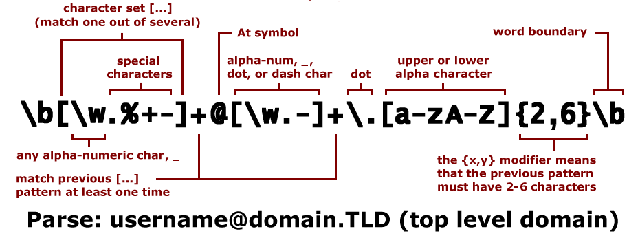
Una expresión es una cadena de texto formada por caracteres, metacaracteres o cualquier estructura que permita la sintaxis. Veamos los más importantes:
- Cadena literal. Coincide exactamente con lo escrito. Abc à buscará Abc.
- Anclas: Indican que lo que queremos encontrar se encuentra al principio o al final de la cadena. Combinándolas, podemos buscar algo que represente a la cadena entera:
- patron: coincide con cualquier cadena que comience con patrón.
- patron$: coincide con cualquier cadena que termine con patrón.
- ^patron$: coincide con la cadena exacta patrón.
- Clases de caracteres: Se utilizan cuando se quiere buscar un carácter dentro de varias posibles opciones. Una clase se delimita entre corchetes y lista posibles opciones para el carácter que representa:
- [abc]: coincide con a, b, o c
- [387ab]: coincide con 3, 8, a o b
- niñ[oa]s: coincide con niños o niñas.
- Para evitar errores, en caso de que queramos crear una clase de caracteres que contenga un corchete, debemos escribir una barra \ delante, para que el motor de expresiones regulares lo considere un carácter normal: la clase [ab\[] coincide con a, b y [.
- Rangos. Si queremos encontrar un número, podemos usar una clase como [0123456789], o podemos utilizar un rango. Un rango es una clase de caracteres abreviada que se crea escribiendo el primer carácter del rango, un guion y el último carácter del rango. Múltiples rangos pueden definirse en la misma clase de caracteres.
- [a-c]: equivale a [abc]
- [0-9]: equivale a [0123456789]
- [a-d5-8]: equivale a [abcd5678]
- Es importante notar que si se quiere buscar un guion debe colocarse al principio o al final de la clase. Es decir, inmediatamente después del corchete izquierdo o inmediatamente antes del corchete derecho; o, en su defecto, escaparse. Si no se hace de esta forma, el motor de expresiones regulares intentará crear un rango y la expresión no funcionará como debe (o dará un error). Si queremos, por ejemplo, crear una clase que coincida con los caracteres a, 4 y -, debemos escribirla así:
[a4-]
[-a4]
[a\-4]
- Rango negado. Así como podemos listar los caracteres posibles en cierta posición de la cadena, también podemos listar caracteres que no deben aparecer. Para lograrlo, debemos negar la clase, colocando un circunflejo inmediatamente después del corchete izquierdo.
- [^abc]: coincide con cualquier carácter distinto de a, b y c
- Clases predefinidas. Existen algunas clases que se usan frecuentemente y por eso existen formas abreviadas para ellas. En Python, así como en otros lenguajes, se soportan las clases predefinidas de Perl y de POSIX. Algunos ejemplos de expresiones regulares son:
- \d (POSIX [[:digit:]]): equivale a [0-9]
- \s (POSIX [[:space:]]): caracteres de espacio en blanco (espacio, tabulador, nueva línea, etc)
- \w (POSIX [[:word:]]): letras minúsculas, mayúsculas, números y guion bajo (_)
- "." : coincide con cualquier carácter.
- Cuantificadores. Son conjuntos de caracteres que multiplican el patrón que les precede. Mientras que con las clases de caracteres podemos buscar un dígito, o una letra; con los cuantificadores podemos buscar cero o más letras, al menos 7 dígitos, o entre tres y cinco letras mayúsculas. Los cuantificadores son.
- * cero o más, similar a {0,}.
- + una o más, similar a {1,}.
- ? cero o una, similar a {0,1}.
- {n} exactamente n veces.
- {n,} por lo menos n veces.
- {n, m} por lo menos n, pero no más de m veces.
- *? cero o más, similar a {0 , }?.
- +? una o más, similar a {1, }?.
- ?? cero o una, similar a {0,1}?.
- {n}? exactamente n veces.
- {n,}? por lo menos n veces.
- {n, m}? por lo menos n pero no más de m veces.
- Alternativa (|): permite definir opciones para el patrón: perro|gato coincide con perro y con gato.
- Secuencias de escape o metacaracteres.
- \n Nueva línea (new line). El cursor pasa a la primera posición de la línea siguiente.
- \t Tabulador. El cursor pasa a la siguiente posición de tabulación.
- \\ Barra diagonal inversa
- \v Tabulación vertical.
- \ooo Carácter ASCII en notación octal.
- \xhh Carácter ASCII en notación hexadecimal.
- \xhhhh Carácter Unicode en notación hexadecimal.
Ejemplos
- .* : cualquier cadena, de cualquier largo (incluyendo una cadena vacía)
- [a-z]{3,6}: entre 3 y 6 letras minúsculas
- \d{4,}: al menos 4 dígitos
- .*hola!?: una cadena cualquiera, seguida de hola, y terminando (o no) con un !
- ^[(a-z0-9\_\-\.)]+@[(a-z0-9\_\-\.)]+\.[(a-z)]{2,15}. Valida un email.
- ^\(?\+[\d]{1,3}\)?\s?[\d]{1,5}\s?[\d][\s\.-]?{6,7}$. Para un número de teléfono.
Módulo re
Para utilizar Expresiones Regulares, Python provee el módulo re. Importando este módulo podemos crear objetos de tipo patrón y generar objetos tipo matcher, que son los que contienen la información de la coincidencia del patrón en la cadena.
Creando un patrón
Para crear un objeto patrón, debemos importar el módulo re y utilizamos la función compile.
import re
patron = re.compile(r'a[3-5]+')
# coincide con una letra, seguida de al menos 1 dígito entre
# 3 y 5
Desde este momento, podemos usar el objeto patrón para comparar cadenas con la expresión regular.
Buscar el patrón en la cadena
Para buscar un patrón en una cadena, Python provee los métodos search y match. La diferencia entre ambos es que, mientras search busca en la cadena alguna ocurrencia del patrón, match devuelve None si la ocurrencia no se da al principio de la cadena.
cadena = r'a44453'
patron.match(cadena) # <_sre.SRE_Match object at 0x02303BF0>
patron.search(cadena) # <_sre.SRE_Match object at 0x02303C28>
cadena = r'ba3455' # la coincidencia no está al principio!
patron.search(cadena)# <_sre.SRE_Match object at 0x02303BF0>
print patron.match(cadena) # None
Si sabemos que obtendremos más de una coincidencia, podemos usar el método findall, que recorre la cadena y devuelve una lista de coincidencias.
patron.findall(r'a455 a333b435') # ['a455', 'a333']
Reemplazo de cadenas
Similar a la combinación search + expand, existe el método sub; cuya función es encontrar todas las coincidencias de un patrón y sustituirlas por una cadena. Este recibe dos parámetros: el primero es la cadena con la que se sustituirá el patrón y el segundo es la cadena sobre la que queremos aplicar la sustitución. Y también se pueden utilizar referencias.
patron.sub(r"X", r'a455 a333b435')
# sustituye todas las ocurrencias del patrón por X 'X XX'
Modificadores para el patrón
Existen varios modificadores que podemos pasar al método compile para modificar el comportamiento del patrón. Los más usados son:
- µ re.I o re.IGNORECASE: hace que el patrón no distinga entre minúsculas y mayúsculas.
- µ re.M o re.MULTILINE: modifica el comportamiento de ^ y `<letra para que coincidan con el comienzo y final de cada línea de la cadena, en lugar de coincidir con el comienzo y final de la cadena entera
- µ re.S o re.DOTALL: hace que el punto (.) coincida además con un salto de línea. Sin este modificador, el punto coincide con cualquier carácter excepto un salto de línea
Cada modificador se usa como segundo parámetro de la función. Podemos unir los efectos de más de un modificador separándolos con |.
patron = re.compile(r'el patron', re.I | re.MULTILINE)
División según el patrón
El método re.split: divide una cadena a partir de un patrón.
print(re.split(r' ', texto))
5.5.2. Math
Funciones numéricasµ
- math.ceil(x): Devuelve el entero más próximo mayor o igual que x.
- math.floor(x): Devuelve el entero más próximo menor o igual que x.
- math.gcd(a, b): Devuelve el máximo común divisor ("greatest common divisor") de los números a y b.
- math.isnan(x): Devuelve el booleano True si x es un NaN ("Not a Number").
Funciones de potencia y logarítmicas
- math.exp(x): Devuelve ex.
- math.log(x, [base]): Devuelve el logaritmo neperiano de x. Si se incluye el segundo argumento, devuelve el logaritmo de x en la base indicada.
- math.log2(x): Devuelve el logaritmo en base 2 de x.
- math.log10(x): Devuelve el logaritmo en base 10 de x.
- math.pow(x, y): Devuelve xy.
- math.sqrt(x): Devuelve la raíz cuadrada de x.
Funciones trigonométricas y de conversión de ángulos
- math.cos(x): Devuelve el coseno de x.
- math.sin(x): Devuelve el seno de x.
- math.tan(x): Devuelve la tangente de x.
- math.degrees(x): Convierte un ángulo de grados sexagesimales a radianes.
- math.radians(x): Convierte un ángulo de radianes a grados sexagesimales.
Constantes
- math.pi: Número pi.
- math.e: Número e:
- math.nan: Valor equivalente a "no es un número".
5.5.3. Pandas
Es un paquete de Python que proporciona estructuras de datos similares a los dataframes de R. Pandas depende de Numpy, la librería que añade un potente tipo matricial a Python. Los principales tipos de datos que pueden representarse con pandas son:
- Datos tabulares con columnas de tipo heterogéneo con etiquetas en columnas y filas.
- Series temporales.
Pandas proporciona herramientas que permiten:
- leer y escribir datos en diferentes formatos: CSV, Microsoft Excel, bases SQL y formato HDF5
- seleccionar y filtrar de manera sencilla tablas de datos en función de posición, valor o etiquetas
- fusionar y unir datos
- transformar datos aplicando funciones tanto en global como por ventanas
- manipulación de series temporales
- hacer gráficas
En pandas existen tres tipos básicos de objetos todos ellos basados a su vez en Numpy:
- Series (listas, 1D).
- DataFrame (tablas, 2D).
- Panels (tablas 3D).
5.5.4. NumPy
Es una biblioteca para el lenguaje de programación Python que da soporte para crear vectores y matrices grandes multidimensionales, junto con una gran colección de funciones matemáticas de alto nivel para operar con ellas.
El uso de NumPy en Python brinda una funcionalidad comparable a MATLAB, ya que ambos se interpretan y ambos permiten al usuario escribir programas rápidos siempre que la mayoría de las operaciones funcionen en vectores o matrices en lugar de escalares.
NumPy es un paquete optimizado para trabajar bajo GPUs.
5.5.5. Mathplotlib
Es una biblioteca de imágenes 2D y 3D que produce figuras de alta calidad en una variedad de formatos impresos y entornos interactivos en todas las plataformas. La librería Mathplotlib se puede utilizar en scripts de Python, el shell de Python y en iPython.
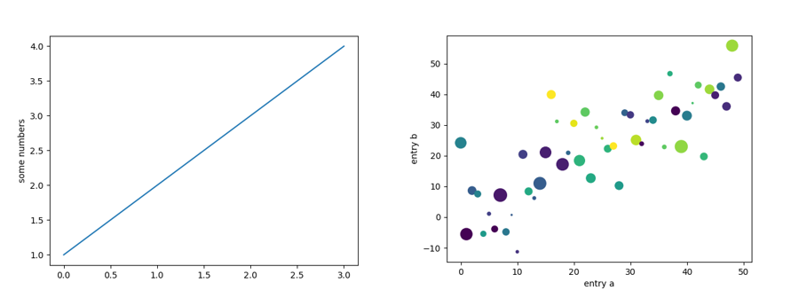
import matplotlib.pyplot as plt
plt.plot([1, 2, 3, 4])
plt.ylabel('some numbers')
plt.show()
import numpy as np
import matplotlib.pyplot as plt
data = {'a': np.arange(50),
'c': np.random.randint(0, 50, 50),
'd': np.random.randn(50)}
data['b'] = data['a'] + 10 * np.random.randn(50)
data['d'] = np.abs(data['d']) * 100
plt.scatter('a', 'b', c='c', s='d', data=data)
plt.xlabel('entry a')
plt.ylabel('entry b')
plt.show()
5.6. Caso Práctico Dawbank
La empresa LibreCoders te ha contratado para desarrollar un software de gestión de una cuenta bancaria para la cooperativa de banca ética y sostenible DawBank. Se trata de una aplicación Java formada por una clase principal DawBank y otra llamada CuentaBancaria.
El programa pedirá los datos necesarios para crear una cuenta bancaria. Si son válidos, creará la cuenta y mostrará el menú principal para permitir actuar sobre la cuenta. Tras cada acción se volverá a mostrar el menú.
- Datos de la cuenta. Mostrará el IBAN, el titular y el saldo.
- IBAN. Mostrará el IBAN.
- Titular. Mostrará el titular.
- Saldo. Mostrará el saldo disponible.
- Ingreso. Pedirá la cantidad a ingresar y realizará el ingreso si es posible.
- Retirada. Pedirá la cantidad a retirar y realizará la retirada si es posible.
- Movimientos. Mostrará una lista con el historial de movimientos.
- Salir. Termina el programa.
Clase CuentaBancaria
Una cuenta bancaria tiene como datos asociados el iban (international bank acount number, formado por dos letras y 22 números, por ejemplo, ES6621000418401234567891), el titular (un nombre completo), el saldo (dinero en euros) y los movimientos (histórico de los movimientos realizados en la cuenta, un máximo de 100(*) para simplificar).
Cuando se crea una cuenta es obligatorio que tenga un iban y un titular (que no podrán cambiar nunca). El saldo será de 0 euros y la cuenta no tendrá movimientos asociados.
El saldo solo puede variar cuando se produce un ingreso (entra dinero en la cuenta) o una retirada (sale dinero de la cuenta). En ambos casos se deberá registrar la operación en los movimientos. Los ingresos y retiradas solo pueden ser de valores superiores a cero.
El saldo de una cuenta nunca podrá ser inferior a -50(*) euros. Si se produce un movimiento que deje la cuenta con un saldo negativo (no inferior a -50) habrá que mostrar el mensaje “AVISO: Saldo negativo”. Si se produce un movimiento superior a 3.000(*) euros se mostrará el mensaje “AVISO: Notificar a hacienda”.
No se realizará ningún tipo de entrada por teclado. La única salida por pantalla permitida son los dos mensajes de aviso mencionados arriba, ninguna otra.
(*) Estos valores no pueden variar y son iguales para todas las cuentas bancarias.
Clase DawBank
Clase principal con función main. Encargada de interactuar con el usuario, mostrar el menú principal, dar feedback y/o mensajes de error, etc. Utilizará la clase CuentaBancaria. Puedes implementar las funciones que consideres oportunas.
Resumen
{"id":"68275b5e-1172-4b02-91d8-a139f37a57f2","title":"POO","mindmap":{"root":{"id":"556885f9-1424-4d44-9907-a104c3c1ced3","parentId":null,"text":{"caption":"POO","font":{"style":"normal","weight":"bold","decoration":"none","size":20,"color":"#000000"}},"offset":{"x":0,"y":0},"foldChildren":false,"branchColor":"#000000","children":[{"id":"4665ba62-3530-49b1-b9a6-333c6651e836","parentId":"556885f9-1424-4d44-9907-a104c3c1ced3","text":{"caption":"Clases","font":{"style":"normal","weight":"normal","decoration":"none","size":15,"color":"#000000"}},"offset":{"x":62,"y":-105.0069580078125},"foldChildren":false,"branchColor":"#da0f64","children":[{"id":"2266098e-a91e-4084-b773-d7392fbf1aeb","parentId":"4665ba62-3530-49b1-b9a6-333c6651e836","text":{"caption":"Representación","font":{"style":"normal","weight":"normal","decoration":"none","size":15,"color":"#000000"}},"offset":{"x":114.9757080078125,"y":-22.03472900390625},"foldChildren":false,"branchColor":"#da0f64","children":[]},{"id":"c091bef5-9e43-43ef-aec8-18a6149b42b3","parentId":"4665ba62-3530-49b1-b9a6-333c6651e836","text":{"caption":"Compuestos de","font":{"style":"normal","weight":"normal","decoration":"none","size":15,"color":"#000000"}},"offset":{"x":154.9757080078125,"y":44.96527099609375},"foldChildren":false,"branchColor":"#da0f64","children":[{"id":"747d8fc6-1b52-4519-b8a5-9ea0deaf9261","parentId":"c091bef5-9e43-43ef-aec8-18a6149b42b3","text":{"caption":"Atributos","font":{"style":"normal","weight":"normal","decoration":"none","size":15,"color":"#000000"}},"offset":{"x":138.96533203125,"y":-28.03472900390625},"foldChildren":false,"branchColor":"#da0f64","children":[{"id":"97d76993-08db-4fa8-9d88-b224f2bd66aa","parentId":"747d8fc6-1b52-4519-b8a5-9ea0deaf9261","text":{"caption":"Generales","font":{"style":"normal","weight":"normal","decoration":"none","size":15,"color":"#000000"}},"offset":{"x":107.9757080078125,"y":-25.024322509765625},"foldChildren":false,"branchColor":"#da0f64","children":[]},{"id":"e0a25936-4b7b-485f-a44a-427cb236779e","parentId":"747d8fc6-1b52-4519-b8a5-9ea0deaf9261","text":{"caption":"Comienzan con _","font":{"style":"normal","weight":"normal","decoration":"none","size":15,"color":"#000000"}},"offset":{"x":111.9617919921875,"y":26.95831298828125},"foldChildren":false,"branchColor":"#da0f64","children":[]},{"id":"fe21d012-a609-439f-8bbf-30d99d9fe555","parentId":"747d8fc6-1b52-4519-b8a5-9ea0deaf9261","text":{"caption":"Propiedades","font":{"style":"normal","weight":"normal","decoration":"none","size":15,"color":"#000000"}},"offset":{"x":114.767333984375,"y":-74.20832824707031},"foldChildren":false,"branchColor":"#da0f64","children":[]}]},{"id":"f453bd26-21a4-46f6-b26d-334d20ac533a","parentId":"c091bef5-9e43-43ef-aec8-18a6149b42b3","text":{"caption":"Métodos","font":{"style":"normal","weight":"normal","decoration":"none","size":15,"color":"#000000"}},"offset":{"x":152.96533203125,"y":48.96527099609375},"foldChildren":false,"branchColor":"#da0f64","children":[{"id":"696219ed-f505-4aa3-920f-c5aac9481247","parentId":"f453bd26-21a4-46f6-b26d-334d20ac533a","text":{"caption":"Definición","font":{"style":"normal","weight":"normal","decoration":"none","size":15,"color":"#000000"}},"offset":{"x":99.93408203125,"y":94.98263549804688},"foldChildren":false,"branchColor":"#da0f64","children":[{"id":"8a59dcaa-c0d6-4d9b-b096-e4d7e43116cc","parentId":"696219ed-f505-4aa3-920f-c5aac9481247","text":{"caption":"Parámetros","font":{"style":"normal","weight":"normal","decoration":"none","size":15,"color":"#000000"}},"offset":{"x":107.9722900390625,"y":1.9478759765625},"foldChildren":false,"branchColor":"#da0f64","children":[{"id":"153910c5-f52c-40c5-b987-3a75af4cf205","parentId":"8a59dcaa-c0d6-4d9b-b096-e4d7e43116cc","text":{"caption":"Por defecto","font":{"style":"normal","weight":"normal","decoration":"none","size":15,"color":"#000000"}},"offset":{"x":133.9791259765625,"y":-7.03472900390625},"foldChildren":false,"branchColor":"#da0f64","children":[]},{"id":"cdfe2b52-4fd0-4c23-8b29-eccf68a4574e","parentId":"8a59dcaa-c0d6-4d9b-b096-e4d7e43116cc","text":{"caption":"Por palabras clave","font":{"style":"normal","weight":"normal","decoration":"none","size":15,"color":"#000000"}},"offset":{"x":130.9791259765625,"y":49.96527099609375},"foldChildren":false,"branchColor":"#da0f64","children":[]},{"id":"af86dc79-6402-4281-8920-c87daa03adae","parentId":"8a59dcaa-c0d6-4d9b-b096-e4d7e43116cc","text":{"caption":"Número indeterminado","font":{"style":"normal","weight":"normal","decoration":"none","size":15,"color":"#000000"}},"offset":{"x":122.9791259765625,"y":108.96527099609375},"foldChildren":false,"branchColor":"#da0f64","children":[]}]},{"id":"39328bc4-20f6-403c-b639-ee4434ffcd08","parentId":"696219ed-f505-4aa3-920f-c5aac9481247","text":{"caption":"Valores devueltos","font":{"style":"normal","weight":"normal","decoration":"none","size":15,"color":"#000000"}},"offset":{"x":116.9757080078125,"y":169.96527099609375},"foldChildren":false,"branchColor":"#da0f64","children":[]}]},{"id":"96c17bf6-007a-41da-b9e0-ba37f859ca92","parentId":"f453bd26-21a4-46f6-b26d-334d20ac533a","text":{"caption":"Ámbito de las variables","font":{"style":"normal","weight":"normal","decoration":"none","size":15,"color":"#000000"}},"offset":{"x":104.9583740234375,"y":6.954864501953125},"foldChildren":false,"branchColor":"#da0f64","children":[{"id":"76b935db-c24f-463e-8950-a84d13365f39","parentId":"96c17bf6-007a-41da-b9e0-ba37f859ca92","text":{"caption":"global","font":{"style":"normal","weight":"normal","decoration":"none","size":15,"color":"#000000"}},"offset":{"x":198.9757080078125,"y":-48.010406494140625},"foldChildren":false,"branchColor":"#da0f64","children":[]},{"id":"7890baef-02fe-45c0-a336-3ad5ea5479ea","parentId":"96c17bf6-007a-41da-b9e0-ba37f859ca92","text":{"caption":"local","font":{"style":"normal","weight":"normal","decoration":"none","size":15,"color":"#000000"}},"offset":{"x":201.96875,"y":-1.03472900390625},"foldChildren":false,"branchColor":"#da0f64","children":[]},{"id":"f0effb2e-09c6-42b6-98a8-cae0b4811900","parentId":"96c17bf6-007a-41da-b9e0-ba37f859ca92","text":{"caption":"nonlocal","font":{"style":"normal","weight":"normal","decoration":"none","size":15,"color":"#000000"}},"offset":{"x":201.9617919921875,"y":51.961822509765625},"foldChildren":false,"branchColor":"#da0f64","children":[]}]},{"id":"d7838b0e-8f78-47d4-bed6-695159a73309","parentId":"f453bd26-21a4-46f6-b26d-334d20ac533a","text":{"caption":"Constructores y destructures","font":{"style":"normal","weight":"normal","decoration":"none","size":15,"color":"#000000"}},"offset":{"x":116.972216796875,"y":319.958349609375},"foldChildren":false,"branchColor":"#da0f64","children":[]}]}]},{"id":"21b7f39b-18c6-494c-be48-6ee04bd6fcf6","parentId":"4665ba62-3530-49b1-b9a6-333c6651e836","text":{"caption":"Visibilidad","font":{"style":"normal","weight":"normal","decoration":"none","size":15,"color":"#000000"}},"offset":{"x":157.9757080078125,"y":118.96527099609375},"foldChildren":false,"branchColor":"#da0f64","children":[]},{"id":"369769cd-4df9-4d01-a36a-b7ebffaa95a6","parentId":"4665ba62-3530-49b1-b9a6-333c6651e836","text":{"caption":"Nombrado","font":{"style":"normal","weight":"normal","decoration":"none","size":15,"color":"#000000"}},"offset":{"x":121.9757080078125,"y":-73.03472900390625},"foldChildren":false,"branchColor":"#da0f64","children":[]},{"id":"9ed0e35f-b971-4124-b4db-0cd78b4eb7f8","parentId":"4665ba62-3530-49b1-b9a6-333c6651e836","text":{"caption":"Destrucción","font":{"style":"normal","weight":"normal","decoration":"none","size":15,"color":"#000000"}},"offset":{"x":127.97564697265625,"y":-128.03472900390625},"foldChildren":false,"branchColor":"#da0f64","children":[]}]},{"id":"cb187649-7cbf-4298-801a-a458d3c7ed40","parentId":"556885f9-1424-4d44-9907-a104c3c1ced3","text":{"caption":"Objetos","font":{"style":"normal","weight":"normal","decoration":"none","size":15,"color":"#000000"}},"offset":{"x":-157.98614501953125,"y":-111.01388549804688},"foldChildren":false,"branchColor":"#96cbc3","children":[{"id":"9c19cc67-6e70-4106-a793-f527a3d94f4e","parentId":"cb187649-7cbf-4298-801a-a458d3c7ed40","text":{"caption":"Creación","font":{"style":"normal","weight":"normal","decoration":"none","size":15,"color":"#000000"}},"offset":{"x":-96.97222900390625,"y":-45.017364501953125},"foldChildren":false,"branchColor":"#96cbc3","children":[]},{"id":"d0054545-a1a3-4a53-97c0-64da05194a0a","parentId":"cb187649-7cbf-4298-801a-a458d3c7ed40","text":{"caption":"Visibilidad","font":{"style":"normal","weight":"normal","decoration":"none","size":15,"color":"#000000"}},"offset":{"x":-99.986083984375,"y":18.965301513671875},"foldChildren":false,"branchColor":"#96cbc3","children":[]}]},{"id":"eacb9064-5439-4488-ad44-c97cf9d14e06","parentId":"556885f9-1424-4d44-9907-a104c3c1ced3","text":{"caption":"Modularización","font":{"style":"normal","weight":"normal","decoration":"none","size":15,"color":"#000000"}},"offset":{"x":-170.9896240234375,"y":56.989593505859375},"foldChildren":false,"branchColor":"#455651","children":[{"id":"5a30ee8d-543a-4356-ba11-77da55f3684a","parentId":"eacb9064-5439-4488-ad44-c97cf9d14e06","text":{"caption":"Paquetes","font":{"style":"normal","weight":"normal","decoration":"none","size":15,"color":"#000000"}},"offset":{"x":-96.97564697265625,"y":-27.03472900390625},"foldChildren":false,"branchColor":"#455651","children":[]},{"id":"460e5e82-ec83-4b2f-8cd8-d46ee07b4228","parentId":"eacb9064-5439-4488-ad44-c97cf9d14e06","text":{"caption":"Módulos","font":{"style":"normal","weight":"normal","decoration":"none","size":15,"color":"#000000"}},"offset":{"x":-107.97222900390625,"y":34.947906494140625},"foldChildren":false,"branchColor":"#455651","children":[]},{"id":"c7147d03-82ba-4e15-8b86-6ed325805912","parentId":"eacb9064-5439-4488-ad44-c97cf9d14e06","text":{"caption":"Uso de import","font":{"style":"normal","weight":"normal","decoration":"none","size":15,"color":"#000000"}},"offset":{"x":-135.9791259765625,"y":86.951416015625},"foldChildren":false,"branchColor":"#455651","children":[]}]},{"id":"a74cb58c-bf83-49bd-b1f3-2a8addbf21bf","parentId":"556885f9-1424-4d44-9907-a104c3c1ced3","text":{"caption":"Librerías","font":{"style":"normal","weight":"normal","decoration":"none","size":15,"color":"#000000"}},"offset":{"x":33,"y":179.99307250976562},"foldChildren":false,"branchColor":"#4d6e0a","children":[{"id":"e6ecb85d-61c2-406a-a7eb-c88f6e237bed","parentId":"a74cb58c-bf83-49bd-b1f3-2a8addbf21bf","text":{"caption":"de cadenas","font":{"style":"normal","weight":"normal","decoration":"none","size":15,"color":"#000000"}},"offset":{"x":114.95489501953125,"y":57.96875},"foldChildren":false,"branchColor":"#4d6e0a","children":[]},{"id":"18444437-def5-408c-b96e-c87850a4cacc","parentId":"a74cb58c-bf83-49bd-b1f3-2a8addbf21bf","text":{"caption":"Expresiones regulares","font":{"style":"normal","weight":"normal","decoration":"none","size":15,"color":"#000000"}},"offset":{"x":81.94097900390625,"y":-44.04168701171875},"foldChildren":false,"branchColor":"#4d6e0a","children":[{"id":"297faee2-4654-4803-8206-07cb232e58a8","parentId":"18444437-def5-408c-b96e-c87850a4cacc","text":{"caption":"Patrones","font":{"style":"normal","weight":"normal","decoration":"none","size":15,"color":"#000000"}},"offset":{"x":177.9757080078125,"y":-32.0242919921875},"foldChildren":false,"branchColor":"#4d6e0a","children":[]},{"id":"adf551f3-1c84-4b66-a10b-7a2cca6b0871","parentId":"18444437-def5-408c-b96e-c87850a4cacc","text":{"caption":"Metacaracteres","font":{"style":"normal","weight":"normal","decoration":"none","size":15,"color":"#000000"}},"offset":{"x":183.9757080078125,"y":21.97222900390625},"foldChildren":false,"branchColor":"#4d6e0a","children":[]},{"id":"95d92c8c-e584-4ec0-b8dd-bccc4edc6801","parentId":"18444437-def5-408c-b96e-c87850a4cacc","text":{"caption":"Elementos","font":{"style":"normal","weight":"normal","decoration":"none","size":15,"color":"#000000"}},"offset":{"x":184.9757080078125,"y":83.9757080078125},"foldChildren":false,"branchColor":"#4d6e0a","children":[]}]},{"id":"28849866-15dd-4669-922c-855c9c9c12ae","parentId":"a74cb58c-bf83-49bd-b1f3-2a8addbf21bf","text":{"caption":"math","font":{"style":"normal","weight":"normal","decoration":"none","size":15,"color":"#000000"}},"offset":{"x":109.9757080078125,"y":13.951416015625},"foldChildren":false,"branchColor":"#4d6e0a","children":[]},{"id":"5de2c272-fb48-403f-958e-fdfe9e9c73bd","parentId":"a74cb58c-bf83-49bd-b1f3-2a8addbf21bf","text":{"caption":"Pandas","font":{"style":"normal","weight":"normal","decoration":"none","size":15,"color":"#000000"}},"offset":{"x":120.97222900390625,"y":101.9444580078125},"foldChildren":false,"branchColor":"#4d6e0a","children":[]},{"id":"17c26c09-4b2f-45b0-b8bb-a3c99c66994d","parentId":"a74cb58c-bf83-49bd-b1f3-2a8addbf21bf","text":{"caption":"NumPy","font":{"style":"normal","weight":"normal","decoration":"none","size":15,"color":"#000000"}},"offset":{"x":128.96527099609375,"y":151.95489501953125},"foldChildren":false,"branchColor":"#4d6e0a","children":[]},{"id":"9d6efeb2-07b9-4a57-aea3-8a13a9fa1f2e","parentId":"a74cb58c-bf83-49bd-b1f3-2a8addbf21bf","text":{"caption":"Mathplotlib","font":{"style":"normal","weight":"normal","decoration":"none","size":15,"color":"#000000"}},"offset":{"x":128.95831298828125,"y":199.96185302734375},"foldChildren":false,"branchColor":"#4d6e0a","children":[]}]}]}},"dates":{"created":1640111762678,"modified":1640112396460},"dimensions":{"x":4000,"y":2000},"autosave":false}
...
Obra publicada con Licencia Creative Commons Reconocimiento Compartir igual 4.0